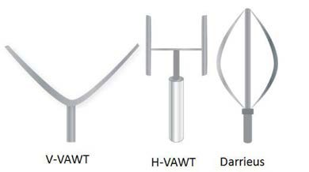
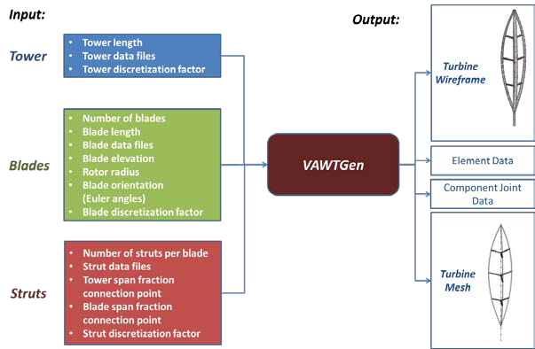
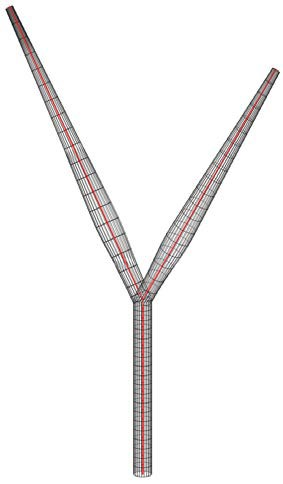
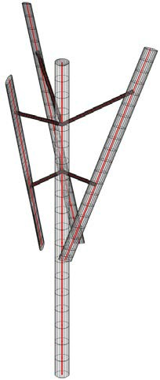
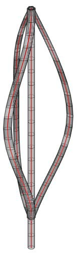
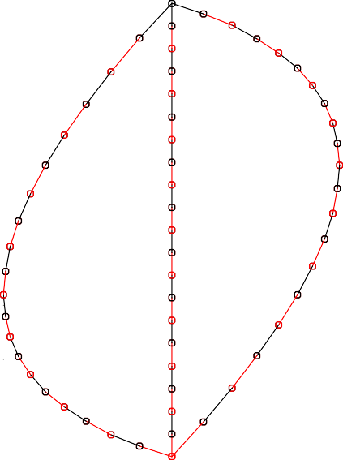
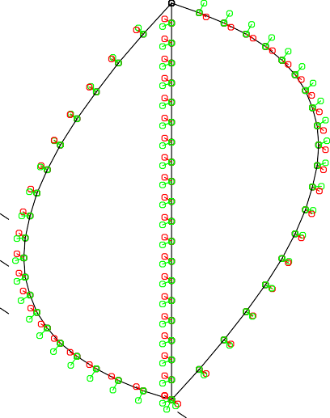

All of this has been automated, but the option to create and load these legacy files has been preserved. TODO: show how to do this and condense and modernize this text.
Version 1.0 User Guide
Brian C. Owens
Wind Energy Technologies
Sandia National Laboratories
November 7, 2013
Contents
Overview of VAWTGen Mesh Generator 1
Conventions Employed in Creating a Model with VAWTGen 5
Structural and aerodynamic description of components 5
Caveats of creating a VAWT configuration in VAWTGen 7
VAWTGen Command Line Execution 10
OWENS Main Input File (.owens) 15
Element Property File (.el) 16
Element Orientation File (.ort) 17
Boundary Conditions File (.bc) 17
Introduction
This user guide presents instructions for using the VAWTGen vertical-axis wind turbine (VAWT) mesh generator. This generator is intended to be utilized with the Offshore Wind ENergy Simulation (OWENS) analysis tool [1]. The input files for this mesh generator are discussed in detail. Turbine components (tower, blades, and struts) are described using existing National Renewable Energy Laboratory (NREL) file formats [2]. A simple input file sizes these basic components and positions them in a hub fixed coordinate frame at arbitrary distances from the origin with arbitrary orientation. VAWTGen generates a mesh of a VAWT consisting of Timoshenko beam elements along with other files describing properties of the VAWT. These files serve as inputs to the OWENS analysis tool. VAWTGen also visualizes the VAWT assembly and mesh to provide a visual confirmation that the VAWT is constructed correctly. Furthermore, VAWTGen can visualize the modal and transient results output by the OWENS analysis tool.
Overview of VAWTGen Mesh Generator
A VAWT rotor primarily consists of a tower and blade components. The blades may be affixed to the tower at their ends as in the Darrieus and V-VAWT configurations or via struts as in the H-VAWT configuration. Struts may also provide a connection between the tower and blades at any position along the tower and blade spans. The VAWTGen mesh generator is capable of generating VAWTs of arbitrary geometry, including H-type, V-type, and Darrieus configurations shown in Figure 1. The VAWT configuration is discretized from continuous structural components into a finite number of beam elements. Elements span between discrete points in the mesh, known as nodes. Finite element analysis examines the motions of nodes as dictated by the deformation of the beam elements under prescribed boundary conditions. This collection of nodes and elements forms the mesh of the VAWT configuration.
{width="2.5990562117235347in" height="1.453332239720035in"}
[]{#_bookmark2 .anchor}Figure 1 Illustrations of V, H, and Darrieus VAWT configurations
VAWTGen accepts data files containing the basic geometry of tower, blade, and strut components. Other crucial configuration information is specified such as the elevation of the blade root from the tower root, as well as the radial distance the blade root is positioned from the tower. An arbitrary number of blades may be specified for the configuration. VAWTGen positions the blade roots with equal azimuth spacing about the tower axis. The blades may be rotated into an arbitrary orientation per a sequence of Euler angles input by the user. If required, struts may be inserted between the tower and a
blade by specifying a fraction of the tower span and the blade span the strut will span. VAWTGen will insert a straight strut of the appropriate length between the tower and blade components. The geometry of the strut component is specified by a file containing geometric data.
With these relatively minimal set of inputs (as illustrated in Figure 2) a VAWT of arbitrary configuration may be created. Therefore, a separate tool is not required for the various types of configurations. VAWTGen provides a convenient means to visualize the VAWT turbine in a wireframe or rendered format. This serves as a quick check for the user to ensure the VAWT has been constructed as intended, and shows the actual turbine configuration that the mesh of beam elements represents. VAWTGen also visualizes the finite element mesh once it is created. VAWTGen identifies points of intersection between the various components and inserts nodes accordingly. These node pairs at points of intersection (i.e. strut to tower, blade to strut, blade to tower) are recorded so appropriate constraint conditions at these joints may be imposed. The orientation of the finite elements in the mesh is also visualized to ensure the elements are positioned and oriented as intended.
{width="4.016800087489064in" height="2.6266666666666665in"}
[]{#_bookmark3 .anchor}Figure 2 Input and output of VAWTGen mesh generator
Output includes a mesh file is generated that will be used by the analysis software. By default, the mesh is discretized in the same manner as the geometric description of components as specified in the component data files. The user may further subdivide the mesh by specifying an integer factor to further discretize the geometric data into elements. An elemental data file is also created, containing the structural properties of elements. An orientation file is generated containing the Euler angles representing the orientation of the elements. VAWTGen requires data files be supplied to describe the geometry of the primary turbine components (blades, towers, and struts). A joint file is also generated containing nodal information about joint locations. This file is used to specify general constraints between structural components. A blade file is also generated that contains aerodynamic data and
provides information needed for mapping aerodynamic loads to nodal locations on the structural model, as well as supplying geometry to aerodynamic data and geometry to external aerodynamic modules.
The format of the structural component data files is the same as the component files for NREL's FAST code [2]. These files describe the geometry and aerodynamic properties of general turbine components, and there is nothing that restricts their use to horizontal-axis wind turbines (HAWTs) specifically. For example, even though a Darrieus blade is not likely be installed on a HAWT, it is easily described by the NREL's FAST blade geometry file format. This allows existing wind energy design tools to be interfaced with the VAWT analysis tool without the need to consider new file formats. NREL's FAST separates geometrical/structural properties of a blade and aerodynamic properties of a blade into two files and the same approach is employed in the VAWTGen mesh generator.
Demonstration
This section demonstrates the capabilities of the VAWTGen mesh generator. First a two bladed V-VAWT configuration is considered. Figure 3 shows the wireframe visualization of this VAWT. The red line within the wireframe represents the beam flexural axis upon which the actual finite element mesh is created. Note that the blades may be positioned at any orientation. The blades and top of the tower share a common point and can be joined together via a constraint relationship that appropriately models the joint. Next, a three bladed H-VAWT with multiple strut connections is considered. Figure 4 shows the wireframe visualization and mesh for the H-VAWT configuration. The blades are oriented at an arbitrary orientation, and two strut connections per blade are specified. Finally, Darrieus type turbine configurations with swept and strutted blades are considered as shown in Figure 5 and Figure 6 respectively.
{width="1.8892694663167104in" height="3.2266666666666666in"} {width="1.3600043744531933in" height="3.2133333333333334in"}
[]{#bookmark5 .anchor}Figure 3 Wireframe of V-VAWT []{#bookmark6 .anchor}Figure 4 Wireframe of H-VAWT
{width="1.02086176727909in" height="3.3866666666666667in"} {width="0.8588167104111986in" height="3.3866666666666667in"}
{width="0.8588167104111986in" height="3.3866666666666667in"}
+–––––––––––––––––+–––––––––––––––––-+ | > []{#bookmark7 | > []{#bookmark8 .anchor}Figure | | > .anchor}Figure 5 Wireframe | > 6 Wireframe of Strutted | | > of Swept Darrieus VAWT** | > Darrieus VAWT** | +==================================+===================================+ +–––––––––––––––––+–––––––––––––––––-+
Conventions Employed in Creating a Model with VAWTGen
This section describes some specific conventions and caveats of creating a mesh of a VAWT using the VAWTGen mesh generator. First, the files use to describe the structural and aerodynamic properties of files are discussed
Structural and aerodynamic description of components
Structural and aerodynamic descriptions of components are specified through NREL FAST file format using the blade .dat files and Aerodyn .ipt files. For structural description (using the .dat file), only the lines highlighted in red are considered by VAWTGen.
+––––––+–––+–––––-+–-+–––+–-+–––-+–––-+––+ | > (-) | * | > | | > | | > * | > ** | ** | | > (-) | *(de | (kg/m) | | **( | | *(Nm\ | (N) | (- | | | g)** | > | | Nm\^ | | ^2)** | | ** | | | | (Nm\^2)** | | 2)** | | | | | +============+======+===========+===+======+===+=======+=======+====+ | > ) (kg | > | **(m) | * | ( | > | > ** | | | | > m) (kg | m) | | * | m) | | (m)** | | | | | > ( | | ( | | * | | | | | | m)** | | m | | * | | | | | | | | ) | | ( | | | | | | | | * | | m | | | | | | | | * | | ) | | | | | | | | | | * | | | | | | | | | | * | | | | +––––––+–––+–––––-+–-+–––+–-+–––-+–––-+––+
+––-+––+–––-+–––+––––––––-+––––-+––––+––+ | > | | 0. | ** | > **9.163e+009 | > * | > ** | > | | **0 | | 000 | 353. | > 9.163e+009** | *6.8042 | 8.211e | * | | .00 | | | 43** | | e+009** | +009** | *0 | | 000 | | | | | | | .0 | | > 0 | | | | | | | 00 | | .20 | | | | | | | ** | | 0** | | | | | | | | +=====+====+=======+======+=================+=========+========+====+ | > | | > | > * | > 0.000 0.0 | > ** | | | | ** | | **0. | *0.0 | > 0.000 | 0.000** | | | | 316 | | 000** | 00** | | | | | | .71 | | | | | | | | | > | | | | | | | | | 31 | | | | | | | | | 6.7 | | | | | | | | | 1** | | | | | | | | +––-+––+–––-+–––+––––––––-+––––-+––––+––+ | > | | 0. | ** | **9.163e+009 | > * | ** | * | | **0 | | 000 | 353. | 9.163e+009** | *6.8042 | 8.211e | *0 | | .05 | | | 43** | | e+009** | +009** | .0 | | > 0 | | | | | | | 00 | | .20 | | | | | | | ** | | 0** | | | | | | | | +––-+––+–––-+–––+––––––––-+––––-+––––+––+ | > | | > | > * | > 0.000 0.0 | > ** | | | | ** | | **0. | *0.0 | > 0.000 | 0.000** | | | | 316 | | 000** | 00** | | | | | | .71 | | | | | | | | | > | | | | | | | | | 31 | | | | | | | | | 6.7 | | | | | | | | | 1** | | | | | | | | +––-+––+–––-+–––+––––––––-+––––-+––––+––+ | > | | 0. | ** | **9.163e+009 | > * | ** | * | | ** | | 000 | 353. | 9.163e+009** | *6.8042 | 8.211e | *0 | | 0.1 | | | 43** | | e+009** | +009** | .0 | | > 0 | | | | | | | 00 | | .20 | | | | | | | ** | | 0** | | | | | | | | +––-+––+–––-+–––+––––––––-+––––-+––––+––+ | > | | > | > * | > 0.000 0.0 | > ** | | | | ** | | **0. | *0.0 | > 0.000 | 0.000** | | | | 316 | | 000** | 00** | | | | | | .71 | | | | | | | | | > | | | | | | | | | 31 | | | | | | | | | 6.7 | | | | | | | | | 1** | | | | | | | | | > | | | | | | | | | > | | | | | | | | | ** | | | | | | | | | .. | | | | | | | | | .** | | | | | | | | +––-+––+–––-+–––+––––––––-+––––-+––––+––+ | > * | > | 0. | ** | **9.163e+009 | > * | ** | * | | *0. | * | 000 | 353. | 9.163e+009** | *6.8042 | 8.211e | *0 | | 8** | *0 | | 43** | | e+009** | +009** | .0 | | | .2 | | | | | | 00 | | | 00 | | | | | | ** | | | ** | | | | | | | +––-+––+–––-+–––+––––––––-+––––-+––––+––+ | > * | ** | > | > * | > 0.000 0.0 | > ** | | | | *31 | 31 | **0. | *0.0 | > 0.000 | 0.000** | | | | 6.7 | 6. | 000** | 00** | | | | | | 1** | 71 | | | | | | | | | ** | | | | | | | +––-+––+–––-+–––+––––––––-+––––-+––––+––+ | > | > | 0. | ** | **9.163e+009 | > * | ** | * | | ** | * | 000 | 353. | 9.163e+009** | *6.8042 | 8.211e | *0 | | 0.8 | *0 | | 43** | | e+009** | +009** | .0 | | 5** | .2 | | | | | | 00 | | | 00 | | | | | | ** | | | ** | | | | | | | +––-+––+–––-+–––+––––––––-+––––-+––––+––+ | > * | ** | > | > * | > 0.000 0.0 | > ** | | | | *31 | 31 | **0. | *0.0 | > 0.000 | 0.000** | | | | 6.7 | 6. | 000** | 00** | | | | | | 1** | 71 | | | | | | | | | ** | | | | | | | +––-+––+–––-+–––+––––––––-+––––-+––––+––+ | > * | > | 0. | ** | **9.163e+009 | > * | ** | * | | *0. | * | 000 | 353. | 9.163e+009** | *6.8042 | 8.211e | *0 | | 9** | *0 | | 43** | | e+009** | +009** | .0 | | | .2 | | | | | | 00 | | | 00 | | | | | | ** | | | ** | | | | | | | +––-+––+–––-+–––+––––––––-+––––-+––––+––+ | > * | ** | > | > * | > 0.000 0.0 | > ** | | | | *31 | 31 | **0. | *0.0 | > 0.000 | 0.000** | | | | 6.7 | 6. | 000** | 00** | | | | | | 1** | 71 | | | | | | | | | ** | | | | | | | +––-+––+–––-+–––+––––––––-+––––-+––––+––+ | > | > | 0. | ** | **9.163e+009 | > * | ** | * | | ** | * | 000 | 353. | 9.163e+009** | *6.8042 | 8.211e | *0 | | 0.9 | *0 | | 43** | | e+009** | +009** | .0 | | 5** | .2 | | | | | | 00 | | | 00 | | | | | | ** | | | ** | | | | | | | +––-+––+–––-+–––+––––––––-+––––-+––––+––+ | > * | ** | > | > * | > 0.000 0.0 | > ** | | | | *31 | 31 | **0. | *0.0 | > 0.000 | 0.000** | | | | 6.7 | 6. | 000** | 00** | | | | | | 1** | 71 | | | | | | | | | ** | | | | | | | +––-+––+–––-+–––+––––––––-+––––-+––––+––+ | > | > | 0. | ** | > **9.163e+009 | > * | > ** | > | | ** | * | 000 | 353. | > 9.163e+009** | *6.8042 | 8.211e | * | | 1.0 | *0 | | 43** | | e+009** | +009** | *0 | | 000 | .2 | | | | | | .0 | | 0** | 00 | | | | | | 00 | | | ** | | | | | | ** | +––-+––+–––-+–––+––––––––-+––––-+––––+––+ | > * | ** | > | > * | > 0.000 0.0 | > ** | | | | *31 | 31 | **0. | *0.0 | > 0.000 | 0.000** | | | | 6.7 | 6. | 000** | 00** | | | | | | 1** | 71 | | | | | | | | | ** | | | | | | | +––-+––+–––-+–––+––––––––-+––––-+––––+––+
Caveats of blade structural description in VAWTGen are described below.
{width="4.046369203849519e-3in" height="0.15120188101487314in"}The alpha column describing bend-twist coupling is not currently employed in the analysis.{width="4.046369203849519e-3in" height="0.15120188101487314in"}
For blades, the reference axis is assumed to pass through the quarter chord. The blade may be shaped by using the PrecrvRef and PreswpRef parameters.
VAWTGen creates a counter clockwise rotating turbine. A positive PreswpRef parameter sweeps a blade away from the direction of rotation. A positive PrecrvRef will shape a blade outward from the machine center.
Edgewise elastic axis and mass center offsets are positive towards the trailing edge of the blade section.
Flapwise elastic axis and mass center offsets are positive in the direction outward from the machine center.
Under these assumptions, positive structural twist twists the leading edge inwards towards the machine center.
All other structural properties are the same as that specified in the FAST manual[1].
The aerodynamic description of a component is accomplished via the Aerodyn .ipt file format. As with the blade properties (.dat) file, only certain parts of this file are used by VAWTGen. Specifically, the parts used by VAWTGen are highlighted in red in the example file below.
Note that the DRNodes and PrnElm columns are not used by VAWTGen but must remain in the file for successful reading of the .ipt file. As with the conventional use of the file, RNodes denotes a point by a physical distance along a blade span from the root. AeroTwst is the aerodynamic twist angle in degrees such that a positive twist angle rotates the leading edge of the blade inwards towards machine center. Chord is used as an aerodynamic property and also for a wireframe visualization of a VAWT design. N{width="4.046369203849519e-3in" height="0.15120188101487314in"}Foil gives an airfoil ID to a section. For wireframe visualization purposes the following thickness to chord ratios for an elliptical cross-section are specified by the NFoil integer: 1 – 1.0, 2 – 0.6, 3 - 0.3, all other –
0.2. These thickness to chord ratios are only employed for visualization purposes and do not affect VAWTGen output.
+––––––-+–––––-+––––––-+–––-+–––+–––––––+ | > | 11.10 | > | 1 | * | **NOPRINT | | 2.85833 | | 2.21667 | .22** | *2** | | +=============+===========+=============+=======+======+==============+ | > | 11.10 | > | 1 | * | **NOPRINT | | 5.07500 | | 2.21667 | .22** | *2** | | +––––––-+–––––-+––––––-+–––-+–––+–––––––+ | > | 11.10 | > | 1 | * | **NOPRINT | | 7.29167 | | 2.21667 | .22** | *2** | | +––––––-+–––––-+––––––-+–––-+–––+–––––––+ | > | 10.41 | > | 1 | * | **NOPRINT | | 9.50833 | | 2.21667 | .22** | *2** | | +––––––-+–––––-+––––––-+–––-+–––+–––––––+ | > * | 8.38 | > | 1 | * | **NOPRINT | | *11.72500** | | 2.21667 | .22** | *2** | | +––––––-+–––––-+––––––-+–––-+–––+–––––––+ | > * | 6.35 | > | 1 | * | **NOPRINT | | *13.94167** | | 2.21667 | .22** | *2** | | +––––––-+–––––-+––––––-+–––-+–––+–––––––+ | > * | 4.33 | > | 1 | * | **NOPRINT | | *16.15833** | | 2.21667 | .22** | *2** | | +––––––-+–––––-+––––––-+–––-+–––+–––––––+ | > * | 2.85 | > | 1 | * | **NOPRINT | | *18.37500** | | 2.21667 | .22** | *2** | | +––––––-+–––––-+––––––-+–––-+–––+–––––––+ | > * | 2.22 | > | 1 | * | **NOPRINT | | *20.59167** | | 2.21667 | .22** | *2** | | +––––––-+–––––-+––––––-+–––-+–––+–––––––+ | > * | 1.58 | > | 1 | * | **NOPRINT | | *22.80833** | | 2.21667 | .22** | *2** | | +––––––-+–––––-+––––––-+–––-+–––+–––––––+ | > * | 0.95 | > | 1 | * | **NOPRINT | | *25.02500** | | 2.21667 | .22** | *2** | | +––––––-+–––––-+––––––-+–––-+–––+–––––––+ | > * | 0.53 | > | 1 | * | **NOPRINT | | *27.24167** | | 2.21667 | .22** | *2** | | +––––––-+–––––-+––––––-+–––-+–––+–––––––+ | > * | 0.38 | > | 1 | * | **NOPRINT | | *29.45833** | | 2.21667 | .22** | *2** | | +––––––-+–––––-+––––––-+–––-+–––+–––––––+ | > * | 0.23 | > | 1 | * | **NOPRINT | | *31.67500** | | 2.21667 | .22** | *2** | | +––––––-+–––––-+––––––-+–––-+–––+–––––––+ | > * | 0.08 | > | 1 | * | **NOPRINT | | *33.89167** | | 2.21667 | .22** | *2** | | +––––––-+–––––-+––––––-+–––-+–––+–––––––+
Caveats of creating a VAWT configuration in VAWTGen
The previous sections discussed the files for describing the various components (blades, tower, struts) of a VAWT. This section provides details for creating consistent VAWT models using VAWTGen and illustrates input parameters.
Coordinate system
The following coordinate system z-axis is along the tower axis, and x- and y-axes are in the plane of rotation.
Tower component
The primary input for the tower component is the tower length or height. With this specification, VAWTGen positions the tower vertically along the h~3~ axis with the root of the tower at the origin of the coordinate system. A straight tower is assumed. Any PrecrvRef or PreswpRef specified in the .dat file for the tower is ignored.
Blade component
The blade components are positioned using the following input parameters:
Number of blades
Blade length
Blade root elevation from tower base elevation (z= 0)
Blade root radial offset from z-axis (this positions the root of the blade at the appropriate x and y coordinates depending on the azimuth location of the blade)
Blade theta orientation a (degrees, rotation about the y-axis)
Blade sweep angle (degrees, rotation about an intermediate "2-axis" a positive angle sweeps the blade away from the direction of rotation)
Notes:
The blade "theta" orientation angle should be negative so that the root is at a lower elevation (z-coordinate). A warning message is output if blade tip elevation is lower than blade root elevation.
Blades will be positioned with equal azimuth spacing of the blade root dictated by the specified number of blades.
Under this convention the root of "Blade 1" will always be positioned at 180 degrees (the x-axis being at 0 degrees azimuth). From this position blades are numbered in ascending order counter clockwise.
This convention of blade placement will also produce element orientations with tangential vectors along the trailing edge of a cross section and normal vectors outward from the machine center.
[]{#_bookmark15 .anchor}Strut component
The strut components (which can provide a structural component between the tower and blade connection) are positioned using the following input parameters:
Fraction of tower span for strut placement
Fraction of blade span for strut placement
VAWTGen will automatically determine the strut length and insert the component based off of these two parameters. VAWTGen inserts a straight strut with the discretization described in the .dat file for the strut. Any PrecrvRef or PreswpRef specified in this file is ignored.
VAWTGen will also insert nodes as needed to provide connections between the structural components.
VAWTGen Input File
As mentioned before, the structural component (tower, blade, and struts) are described by the NREL file formats [1] and will not be discussed here. The main input file for VAWTGen is described below. This example input file is for a three bladed VAWT with struts, but without swept blades. The commented input file shown below is sufficient for explanation and will not be discussed further.
VAWTGen Command Line Execution
VAWTGen is written using the MATLAB programming language. The VAWTGen source code directory should be added to the MATLAB path, and VAWTGen should be executed from a job directory containing the component data files (.dat and .ipt NREL formats), and the VAWTGen input file described in the following section. The command line input should be executed in the MATLAB command window as:
vawtGen(inputFile,outputFileRootName,renderBool,zeroTolerance);
For example:
vawtGen('snl34m.in','snl34m',true,1.0e-5);
Results in execution with "snl34m.in" as the main VAWTGen input file. Resulting output files would have the root "snl34m", such as "snl34m.mesh", "snl34m.el", etc. The renderBool produces a rendered surface plot of the turbine if set to true, and no rendered view if set to "false". The zeroTolerance variable specifies a tolerance to be considered numerical zero when searching for coincident points in the configuration for identifying locations where joints are to be specified. If excluded from the command line input a default value of 1.0e-6 is used.
Command line output from VAWTGen consists of a set of minimum element length ratios to the length of the actual structural component. This allows the user to ensure that element lengths are not too small to cause problems with the structural dynamics simulation. The located joints in the model are also displayed with information of the master and slave node numbers and component types.
A variety of examples are available in the "sampleJobs" directory distributed with VAWTGen. They may be executed by adding the VAWTGen directory to the MATLAB path and running the "generateMesh.m" scripts in the example job directory.
A sample command line output is shown below:
+––––+––––––––+––––––––––––––––––––––+ | > \>\> | | | | > vawt | | | | Gen(\' | | | | ideal3 | | | | 4m.in\ | | | | ',\'id | | | | eal34m | | | | \',0); | | | | > | | | | > * | | | | *** | | | | *** | | | | *** | | | | *** | | | | *** | | | | *** | | | | *** | | | | *** | | | | *** | | | | *** | | | | *** | | | | *** | | | | *** | | | | *** | | | | *** | | | | *** | | | | *** | | | | *** | | | | *** | | | | *** | | | | *** | | | | *** | | | | *** | | | | | | | | - | | | | SNL | | | | V | | | | AWTGen | | | | | | | | V1.0 | | | | * | | | | | | | | - | | | | Dev | | | | eloped | | | | by | | | | | | | | Sandia | | | | Na | | | | tional | | | | | | | | Labora | | | | tories | | | | | | | | Wind | | | | | | | | Energy | | | | | | | | Techno | | | | logies | | | | * | | | | | | | | - | | | | See | | | | | | | | licen | | | | se.txt | | | | | | | | for | | | | | | | | disc | | | | laimer | | | | | | | | infor | | | | mation | | | | * | | | | | | | | > * | | | | *** | | | | *** | | | | *** | | | | *** | | | | *** | | | | *** | | | | *** | | | | *** | | | | *** | | | | *** | | | | *** | | | | *** | | | | *** | | | | *** | | | | *** | | | | *** | | | | *** | | | | *** | | | | *** | | | | *** | | | | *** | | | | *** | | | | *** | | | | > Zero | | | | > tol | | | | erance | | | | > set | | | | > to | | | | > d | | | | efault | | | | > of | | | | > | | | | 1.0e-6 | | | | > | | | | > M | | | | inimum | | | | > e | | | | lement | | | | > to | | | | > com | | | | ponent | | | | > | | | | length | | | | > r | | | | atios: | | | | > Com | | | | ponent | | | | > 1 : | | | | > 0. | | | | 050000 | | | | > | | | | > Com | | | | ponent | | | | > 2 : | | | | > 0. | | | | 050000 | | | | > | | | | > Com | | | | ponent | | | | > 3 : | | | | > 0. | | | | 050000 | | | | > | | | | > 4 | | | | > | | | | Joints | | | | > lo | | | | cated: | | | +========+================+============================================+ | > | > Master - | > Component Type T Component Type B | | Joint | > Node #1, | | | > 1: | > Slave - Node | | | | > #22, | | +––––+––––––––+––––––––––––––––––––––+ | > | > Master - | > Component Type T Component Type B | | Joint | > Node #1, | | | > 2: | > Slave - Node | | | | > #43, | | +––––+––––––––+––––––––––––––––––––––+ | > | > Master - | > Component Type T Component Type B | | Joint | > Node #21, | | | > 3: | > Slave - Node | | | | > #42, | | +––––+––––––––+––––––––––––––––––––––+ | > | > Master - | > Component Type T Component Type B | | Joint | > Node #21, | | | > 4: | > Slave - Node | | | | > #63, | | +––––+––––––––+––––––––––––––––––––––+
VAWTGen Graphical Output
VAWTGen has various graphical outputs after creating a mesh of a VAWT configuration. First, a wire- frame visualization (and surface rendering if requested) is created to allow the user to visually inspect the turbine was constructed as intended. These are shown in Figure 3 through Figure 6. The finite element mesh with node numbering is also visualized as shown in Figure 7. Figure 8 shows the element orientations e~1~ is the local axial direction of an element, e~2~ is the local edgewise direction of an element, and e~3~ is the local flapwise direction of an element.
Finite Element Mesh
Element Orientation Visualization
{width="2.202673884514436in" height="2.950511811023622in"}{width="2.1219225721784776in" height="2.6937674978127735in"}40
35
30
25
20
15
10
5
0
1 0-1
-15
15
10
5
0
-5
-10
x
[]{#_bookmark19 .anchor}Figure 7. Finite element mesh with node numbering Figure 8. Finite element mesh with element orientations
Visualization of OWENS Output using VAWTGen
A number of visualization options exist in VAWTGen for results obtained with the OWENS analysis tool. This section discusses the available options for modal and transient analysis results. These function are located in the "vizFiles" directory of the VAWTGen distribution.
Visualization of Static Analysis Results
The MATLAB function staticPlotter.m will visualize the deformed mesh from a static analysis. This visualization option shows multiple views of the turbine, with the undeformed mesh, and deformed mesh overlaying. The undeformed mesh is plotted in black, and the deformed mesh is plotted in red. The viz function is executed with the following command line call:
staticPlotter(meshFile,resultsFile,scaleFactor);
Such that meshFile is the mesh filename (.mesh), resultsFile is the OWENS output file from static analysis (_static.mat), and scaleFactor scales the deformed mesh.
Visualization of Modal Analysis Results
The MATLAB function viz.m will visualize the mode shapes for a particular mode. This visualization option shows multiple views of the turbine, with the undeformed mesh, 0 degree mode shape, and 90 degree mode shape overlaying. The undeformed mesh is plotted in black, 0 degree mode shape in red, and 90 degree mode shape in blue. The viz function is executed with the following command line call:
viz(meshFile,resultsFile,selectedMode,scaleFactor);
Such that meshFile is the mesh filename (.mesh), resultsFile is the OWENS output file from modal analysis (.out), selectedMode is an integer mode number, and scaleFactor scales the mode shape deformation.
An example of an actual viz function execution is: viz(\'snl34m.mesh\',\'snl34m.out\',2,3) The resulting plot is shown in Figure 9 below:
[]{#bookmark21 .anchor}{width="2.5578937007874014in" height="2.013333333333333in"}
[]{#_bookmark20 .anchor}Figure 9 Mode shape visualization using viz.m
A similar capability exists for generating animated mode shapes. The vizAnimateModal function is utilized in the following manner:
vizAnimateModal(meshFile,resultsFile,selectedMode,sf,dataOutputFilename);
All the input parameters are the same as those for viz, however, the last parameter specifies a file name for a AVI movie file.
Visualization of Transient Analysis Results
A visualization option of transient results as an animation of the motion history of the turbine structure is accomplished via the vizAnimateTransient function. The command line argument is executed as:
vizAnimateTransient(meshFile,uData,sf,dataOutputFilename);
Such that mesh file is the mesh filename (.mesh), uData is an n x m array holding displacement data for n degrees of freedom at m time steps, and sf is the deformation scale factor for the structural mesh. The AVI movie file is generated using dataOutputFilename.
VAWTGen Output Files
The following output files are generated to serve as input for the OWENS analysis tool:
OWENS main input file (.owens)
Beam mesh file (.mesh)
Element property file (.el)
Element orientation file (.ort)
Joint file (.jnt)
Boundary conditions file (.bc)
Blade data file (.bld)
Additionally, a log file describing the junctions of various structural components is generated in a .out output file.
OWENS Main Input File (.owens)
The OWENS main input file is generated with the following format:
Here, the root file name of "vawt" was specified at the command line input for VAWTGen. Command line usage will be discussed in a later section. The associated mesh, element, orientation, joint, and boundary conditions file are listed. The bracketed file comments serve as place holders and are not essential for all OWENS analysis types. These file types will be discussed separately in the OWENS analysis tool user guide. Lines 7 , 9, and 10 contain certain flags that are used by the OWENS software. The two doubles on the 12^th^ line are damping parameters for Rayleigh damping. These are discussed in the OWENS user guide[1].
Mesh File (.mesh)
The mesh file generated by VAWTGen simply lists nodal coordinates and element connectivity. The number of structural components (tower, blades, and struts) and number of elements per component are also listed in this file. The file format is described below:
+––––-+–––––+–––-+–––––––-+–––––––––––-+ | > n | > num | > y | > zCoord | | | umNodes | Elements | Coord | | | | > | > | | | | | > | > xCoord | | | | | nodeNum | | | | | +=========+==========+=======+===============+=======================+ | > | > xCoord | > y | > zCoord | | | nodeNum | | Coord | | | +––––-+–––––+–––-+–––––––-+–––––––––––-+ | > | > xCoord | > y | > zCoord | | | nodeNum | | Coord | | | | > | | | | | | > ... | | | | | +––––-+–––––+–––-+–––––––-+–––––––––––-+ | > ele | > nu | | > | > localNodeNum2 | | mentNum | mNodesPe | | localNodeNum1 | | | | rElement | | | | +––––-+–––––+–––-+–––––––-+–––––––––––-+ | > ele | > nu | | > | > localNodeNum2 | | mentNum | mNodesPe | | localNodeNum1 | | | | rElement | | | | +––––-+–––––+–––-+–––––––-+–––––––––––-+ | > ele | > nu | | > | > localNodeNum2 | | mentNum | mNodesPe | | localNodeNum1 | | | > | rElement | | | | | > ... | | | | | +––––-+–––––+–––-+–––––––-+–––––––––––-+
Element Property File (.el)
The element property file generated by VAWTGen contains element mechanical and some aerodynamic properties. The properties specified in this file are those defined in the NREL file formats [1], but sorted into a form that is more usable by the OWENS analysis tool. The file has the following format:
Element Orientation File (.ort)
The element orientation file generated by VAWTGen lists Euler angles for a 3-2 rotation sequence and some other miscellaneous element information. The file format is described below:
Such that elNum is the element number. Theta3, theta2, and theta1 are the orientation angles (degrees) about a 3, 2, and 1 axes respectively for a 3-2-1 Euler rotation sequence. Length is the element length, and x/y/zOffsets are the offsets of the first node of the element from the coordinate frame origin.
Joint File (.jnt)
The joint file generated by VAWTgen specifies joint conditions at coincident nodes between structural components. The file format for the joint file is shown below:
A master and slave node is defined at a joint from which constraints will be developed. The joint type is also specified (0 = weld(fixed), 1=pinned, 2 = hinge joint with axis about slave node element's e~2~ axis, 3 = hinge joint axis about slave node element's e~1~ axis, 4 = hinge joint axis about slave node element's e~3~ axis). The mass of the joint may be specified in this file. If this option is not sufficient for modeling purposes concentrated mass can be imposed on degrees of freedom using the .ndl file. A place-holder double of zero after jointMass is also in this file, but not currently used in analysis. The orientation associated with the joint is also described by the jointPsi and jointTheta angles (degrees). These angles are used to transform from the global coordinate frame to the local element/joint frame via a 3-2 Euler rotation sequence. Psi denotes rotation about 3, theta denotes rotation about 2.
Boundary Conditions File (.bc)
The boundary conditions file generated by VAWTGen specifies a fixed boundary condition at the tower base (node 1). This file specifies the number of boundary conditions, the node number, local degree of freedom, and specified displacement value for the boundary condition. This file attempts to provide a likely boundary condition for a VAWT structure, but may need to be modified by the analyst depending on the specific configuration of interest. The boundary condition file generated by VAWTGen is shown below:
Blade Data File (.bld)
A blade data file is generated by VAWTGen to aid in mapping aerodynamic loads to the structural mesh generated by VAWTGen. This information includes the blade number, node locations of blade sections in terms of spanwise distance from the blade root, and node number and element numbers associated with these locations. The file also contains the quarter chord coordinate of the blade section, the normal and tangential vector components of the blade section, and the chord of the section. Coordinate and vector components are represented in the rotating, rotor-fixed hub frame. An integer number representing the airfoil as specified in the .ipt file for the blade component and section lift curve slope are also specified. The last column is a place holder not used in the release version of OWENS. The file format for the blade file is described below:
Output File (.out)
This file describes the various component junctions in the generated turbine model. An example of the file is shown below. "T", "B", and "S" denote tower, blade, and strut components. "T/B" denotes a tower blade junction. The component numbers present at this junction are also output for more detail. By default, the tower component is labeled as component 1. Blade components are considered next in a counter clockwise azimuthal direction with the first blade located at 180 degrees azimuth from the x- axis. Struts are numbered last, per blade in a clockwise manner.
+–-+–––-+––+–––––––––––––––––––––––––-+ | T | > jun | > | > (1-2) | | / | ction | f | | | B | | ou | | | | | nd | | +===+=======+====+===================================================+ | T | > jun | > | > (1-2) | | / | ction | f | | | B | | ou | | | | | nd | | +–-+–––-+––+–––––––––––––––––––––––––-+ | T | > jun | > | > (1-3) | | / | ction | f | | | B | | ou | | | | | nd | | +–-+–––-+––+–––––––––––––––––––––––––-+ | T | > jun | > | > (1-3) | | / | ction | f | | | B | | ou | | | | | nd | | +–-+–––-+––+–––––––––––––––––––––––––-+ | T | > jun | > | > (1-4) | | / | ction | f | | | S | | ou | | | | | nd | | +–-+–––-+––+–––––––––––––––––––––––––-+ | T | > jun | > | > (1-5) | | / | ction | f | | | S | | ou | | | | | nd | | +–-+–––-+––+–––––––––––––––––––––––––-+ | T | > jun | > | > (1-6) | | / | ction | f | | | S | | ou | | | | | nd | | +–-+–––-+––+–––––––––––––––––––––––––-+ | T | > jun | > | > (1-7) | | / | ction | f | | | S | | ou | | | | | nd | | +–-+–––-+––+–––––––––––––––––––––––––-+ | B | > jun | > | > (2-1) | | / | ction | f | | | T | | ou | | | | | nd | | +–-+–––-+––+–––––––––––––––––––––––––-+ | B | > jun | > | > (2-1) | | / | ction | f | | | T | | ou | | | | | nd | | +–-+–––-+––+–––––––––––––––––––––––––-+ | B | > jun | > | > (2-3) | | / | ction | f | | | B | | ou | | | | | nd | | +–-+–––-+––+–––––––––––––––––––––––––-+ | \ | | | | | . | | | | | . | | | | | . | | | | +–-+–––-+––+–––––––––––––––––––––––––-+
Future Versions
There are no planned future developments for VAWTGen. Future developments or modifications will be considered as analysis needs arise.
References
OWENS User Guide
Jonkman, J.M., and Buhl, M. L., 2005, FAST User's Guide, National Renewable Energy Laboratory, NREL/EL- 500-38230.